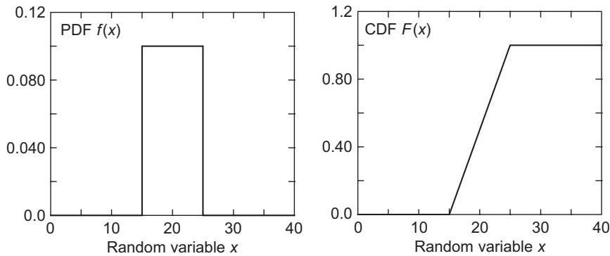
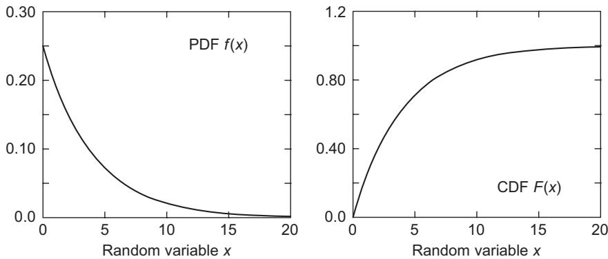
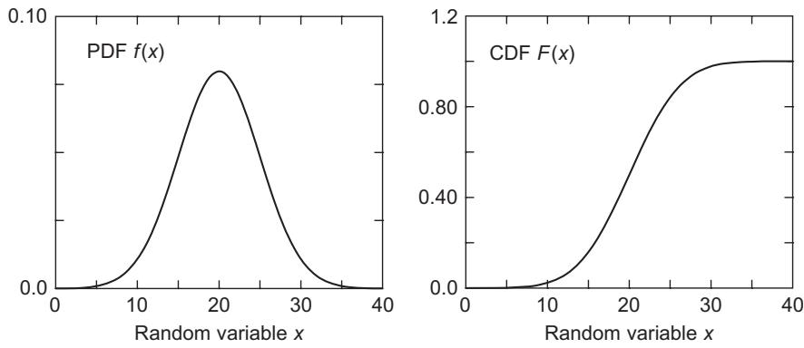
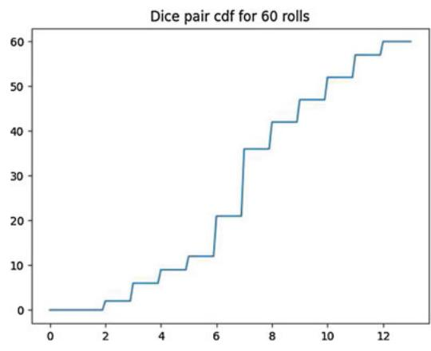
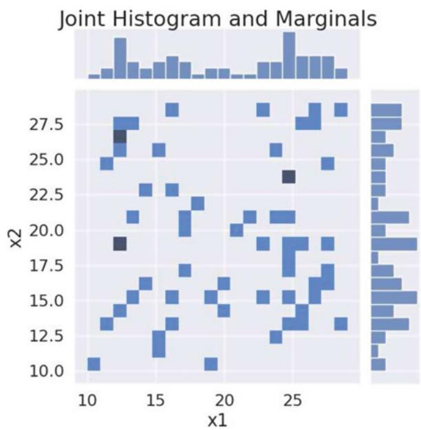
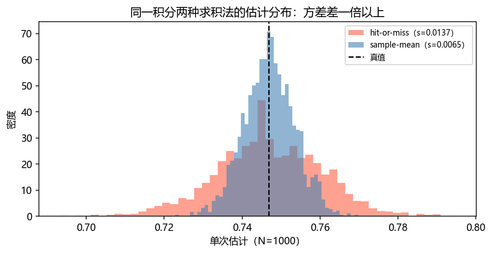
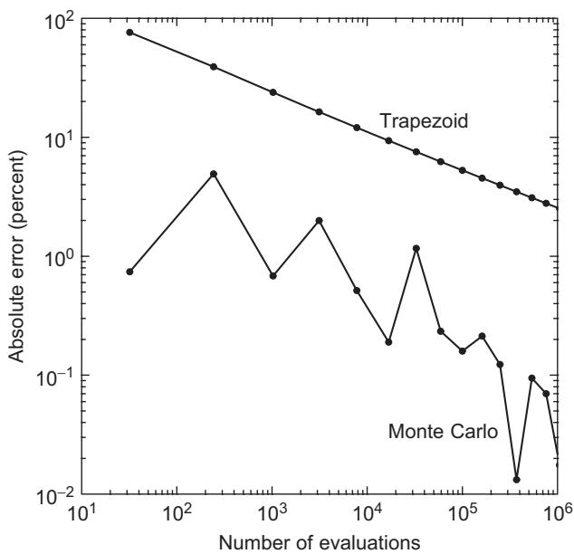
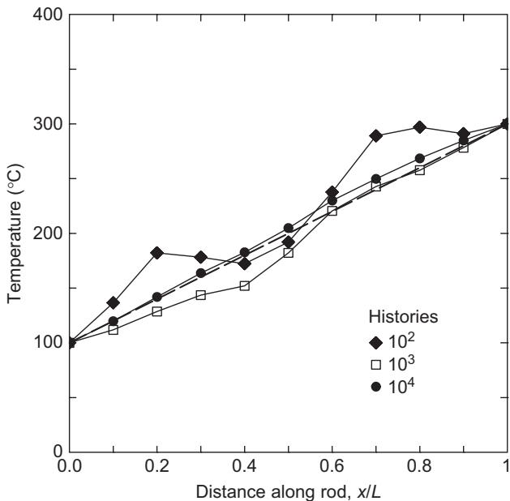

第 2 章 概率论基础：蒙特卡罗的两大理论支柱#
本章解决：蒙特卡罗方法凭什么可信。第 1 章那些"频率会稳定""误差按 \(N^{-1/2}\) 缩小"的观察，本章给出严格答案：大数定律保证样本均值收敛到期望，中心极限定理给出误差的量级与置信区间。为此要先把概率论的语言系统建起来——概率公理与条件概率、随机变量的概率密度与分布函数、期望与方差、多个随机变量与它们的和。 对照教材：Dunn & Shultis §2.1–2.8（本章主线，小节划分跟随它）与附录 B（弱大数定律证明）、附录 C（中心极限定理证明）；Shonkwiler & Mendivil §1.2（事件、条件概率、Bayes 公式、联合分布，并入 §2.1 与 §2.4）。
| 关键词 | 事实 |
|---|---|
| 非负、归一：\(f(x)\ge0,\ \int_a^b f\,\mathrm dx=1\)；\(f\,\mathrm dx\) 是落在 \(\mathrm dx\) 内的概率 | |
| CDF | \(F(x)=\int_a^x f\)；单调不减，\(F(a)=0,\ F(b)=1\) |
| 总体 vs 样本 | 总体 \(\mu,\sigma^2\) 是分布的固有参数；样本 \(\bar z, s^2\) 是从 \(N\) 条 history 算出来的估计 |
| 样本方差为什么除 \(N-1\) | 用 \(\bar z\) 代替未知的 \(\langle z\rangle\) 用掉一个自由度 |
| 和的方差 | 独立时逐项相加：\(\sigma^2(\sum z_i)=\sum\sigma^2(z_i)\)，于是 \(\sigma^2(\bar z)=\sigma^2(z)/N\) |
| 大数定律 | \(\bar z\to\langle z\rangle\)（几乎必然）；前提是均值存在、方差有界 |
| 中心极限定理 | \((\bar z-\langle z\rangle)/(\sigma/\sqrt N)\Rightarrow N(0,1)\)，与 \(z\) 的分布无关 |
| 置信区间 | \(\bar z\pm\lambda s(z)/\sqrt N\)；\(\lambda=1,2,3\) 对应 68%、95%、99.7% |
本章代码：nb/ch02.ipynb（6 个实验，随机种子 2024；结果图均标注"代码实跑"）。本章是全书的理论地基，后面每一章的"± 误差"都从这里的式 (2.63) 来。
2.0 本章导图#
2.1 概率论的语言：事件、公理与条件概率#
2.1.1 事件与三条公理#
一次试验的全部可能结果构成样本空间 \(\Omega\)，事件 \(E\) 是其中某个可指定的子集。概率 \(\Pr(E)\) 的严格身份是"无限多次重复试验中 \(E\) 出现的频率的极限"，但作为数学对象它只需要满足三条公理：
- 非负：\(\Pr(E)\ge 0\)。
- 归一：\(\Pr(\Omega)=1\)。
- 可列可加：若 \(E_1,E_2,\dots\) 两两互斥（\(E_i\cap E_j=\varnothing\)），则 \(\Pr\big(\bigcup_k E_k\big)=\sum_k \Pr(E_k)\)。
由这三条能推出全部常用公式。两条最常用的（S&M §1.2.1）是：
加法公式（把"或"拆成"且"）：
减掉 \(\Pr(E_1\cap E_2)\) 是因为交集中的结果在前两项里各被数了一遍。若两事件互斥，交集为空、概率为零，退化成公理 3。
补事件：\(\Pr(E^c)=1-\Pr(E)\)。这条在蒙特卡罗里用得极多——"至少发生一次"通常算"一次都不发生"的补。
S&M 用两次抛硬币把符号坐实：\(\Omega=\{(H,H),(H,T),(T,H),(T,T)\}\)，令 \(X\) 为正面次数，则 \(\Pr(X=0)=1/4\)、\(\Pr(X=1)=1/2\)、\(\Pr(X=2)=1/4\)。随机变量（random variable）就是这样的东西：把结果映射成实数的函数。它是离散的（可数多个取值）还是连续的（\(\Pr(X=x)=0\) 对每个 \(x\)），决定后文用求和还是积分。
2.1.2 条件概率、乘法公式与全概率公式#
已知 \(B\) 发生后 \(A\) 的概率，定义为把样本空间压缩到 \(B\) 内再算比例：
等价地得到乘法公式 \(\Pr(A\cap B)=\Pr(A\mid B)\Pr(B)=\Pr(B\mid A)\Pr(A)\)——同一条式子的两种拆法，把"联合"和"条件"互相转换。这是全章最有用的一条恒等式，后面联合密度、Bayes 公式、MCMC 的细致平衡都从它派生。
把 \(A\) 按 \(B\) 的划分切开就得到全概率公式。设 \(B_1,\dots,B_k\) 两两互斥且并为 \(\Omega\)（一个"划分"），则
直观：\(A\) 的总概率 = 它在每个"情形"下的概率乘以该情形的概率，再相加。HIV 检测的例子（S&M 习题 13，本章实验 1）正是它的算术：人群患病率 3%，试剂"两个方向都 98% 准"（灵敏度与特异度均 0.98）。阳性者中真患病的比例不是 98%，而是
模拟 100 万人：真阳性 29294、假阳性 19376，频率 0.6019，公式 0.6025，吻合到三位。

拓展：为什么"准确率 98%" 会掉到 60%
分子是"真病人被检出"，分母加上"健康人被误检"。当患病率远小于误检率时，假阳性在阳性总数里占大头——这就是筛查要先选高危人群的原因，也是基率谬误（base-rate fallacy）的标准例子。第 7 章贝叶斯推断会给它一个统一的框架。
2.1.3 Bayes 公式#
把乘法公式写两遍再相除，就得到 Bayes 公式：
四个部件各有名字：\(\Pr(B_i)\) 是先验（prior，看到数据前的信念），\(\Pr(A\mid B_i)\) 是似然（likelihood，该假设下出现这份数据的概率），分母是证据（evidence，归一化常数），左边是后验（posterior）。第 7 章会把这条公式做成整套推断流程；这里只需记住它的操作含义：新证据按"似然"重新分配各假设的权重。
用它复盘第 1 章的蒙提霍尔问题。设选手初选 1 号门，主持人开了 3 号门（露出山羊）。三个假设 \(H_i\)：汽车在 \(i\) 号门，先验各 \(1/3\)。选 3 号门的似然：
- 若汽车在 1 号门，主持人在 2、3 号门中随机挑一个开，可开 3 号，似然 \(1/2\)；
- 若汽车在 2 号门，主持人只能开 3 号，似然 \(1\)；
- 若汽车在 3 号门，主持人不可能开 3 号，似然 \(0\)。
于是
正是"换门胜率 ⅔"。条件概率不是把 ⅔ 背下来，而是主持人行为的规则（他从不开选手的门、也不开汽车的门）被翻译成了似然。
拓展：两个"悖论"其实是同一个
这个推导也说明了常见误区：若主持人不知道汽车在哪、随机开一扇恰好是山羊，那么似然全是 \(1/2\)，后验回到各 \(1/3\)，换不换一样。信息来自规则，不是来自"看到山羊"这个结果本身。
2.2 单个连续随机变量#
2.2.1 概率密度函数#
随机变量 \(x\) 的概率密度函数（probability density function, PDF）\(f(x)\) 必须满足三条（D&S §2.1.1）：
- 定义在区间 \([a,b]\) 上（\(b>a\)，端点可为无穷）；
- 非负：\(f(x)\ge0\)；
- 归一：\(\displaystyle\int_a^b f(x)\,\mathrm dx=1\)。
\(f\) 是"密度的"而非"概率的"：它量的是单位 \(x\) 上的概率，所以单位是 \(x\) 的单位的倒数。对连续变量，取到某个精确值的概率是零；有意义的量是
即落在 \(x\) 附近一小段里的概率。离散与连续的"同构"由此建立：求和换成积分。
2.2.2 累积分布函数#
称为累积分布函数（cumulative distribution function, CDF）。它有三条性质：\(F(a)=0\)、\(F(b)=1\)、单调不减（因为 \(f\ge0\)）；区间概率就是 CDF 的差：
若把 \(f\)、\(F\) 在 \([a,b]\) 外补成常数（\(f=0\)、\(F\) 先 0 后 1），就可以统一写成 \(F(x)=\int_{-\infty}^{x}f\,\mathrm dx'\)。这种写法在画图与实现中更方便，D&S 式 (2.10)–(2.11) 就是这么处理的。
2.2.3 三个必会的分布#
均匀分布（uniform）：\([a,b]\) 上密度为常数，

指数分布（exponential）：\(x\ge0\)，单参数 \(\alpha\)，
指数分布是"无记忆"的：\(\Pr(x>t+s\mid x>t)=\Pr(x>s)\)。这使它成为排队论中间隔时间的标准模型（第 4 章 M/M/1 直接用）。

正态分布（normal/Gaussian）：双参数 \(\mu,\sigma\)，
它的 CDF 没有初等原函数，只能查表或数值积分——这正是 §2.6 中"置信系数"要查表的原因。

2.2.4 总体均值、方差与标准差#
总体均值（population mean，期望）定义为
总体方差（population variance）是到均值的均方距离：
展开平方再逐项积分（D&S 式 2.14）得到最常用的等价形式
推导一行不倒：\(\int[x^2-2x\langle x\rangle+\langle x\rangle^2]f\,\mathrm dx=\langle x^2\rangle-2\langle x\rangle\cdot\langle x\rangle+\langle x\rangle^2\cdot 1\)。标准差是 \(\sigma(x)=\sqrt{\sigma^2(x)}\)。
对随机变量的函数 \(z(x)\)（它自己也是随机变量），同样有
拓展：放射性衰变的标准差（D&S 例 2.1）
衰变常数 \(\lambda\) 是"单位时间内衰变的概率"，存活到 \(t\) 的概率为 \(e^{-\lambda t}\)，故衰变时刻的密度 \(p(t)=\lambda e^{-\lambda t}\)。于是
指数分布的均值与标准差相等——这是它最显著的指纹（第 4 章实验会反复验证）。
2.2.5 样本均值与样本方差#
实际计算中，\(\langle z\rangle\) 与 \(\sigma^2(z)\) 都不可知。用 \(N\) 条 history 定义样本均值
作为总体均值的估计。方差怎么办？最朴素的想法是把式 (2.17) 里的 \(\langle z\rangle\) 换成 \(\bar z\)：
问题在于低估：\(\bar z\) 是数据自己算出来的中心，样本天然围绕它比围绕真均值更紧。严格一点：\(\bar z\) 用掉了一个"约束"，\(N\) 个偏差里只有 \(N-1\) 个是自由的。自由度（degrees of freedom）\(\nu=N-c\)，\(c\) 是约束个数；样本均值 \(c=0\)（\(\nu=N\)），样本方差 \(c=1\)（\(\nu=N-1\)）。所以样本方差定义为
第二个等号是纯代数整理（先展开平方、再提出 \(N/(N-1)\)），好处是只需累加 \(\sum z\) 与 \(\sum z^2\) 两个量，适合流式计算。
无偏性证明。设 \(z_i\) 相互独立、同分布，\(\mathbb E(z_i)=\mu\)、\(\operatorname{var}(z_i)=\sigma^2\)。先把 \(s^2\) 的分子写成
取期望，两项分别处理。第一项 \(\mathbb E\big[\sum z_i^2\big]=N(\mu^2+\sigma^2)\)。第二项需要 \(\mathbb E(\bar z^2)\)：
这里用了 §2.4.2 将要证明的 \(\operatorname{var}(\bar z)=\sigma^2/N\)（三条 line：独立 ⇒ 和的方差相加 ⇒ 再乘 \(1/N^2\)）。于是
两边除以 \(N-1\) 就得到 \(\mathbb E(s^2)=\sigma^2\)：除 \(N-1\) 的版本无偏，除 \(N\) 的版本系统性低估，低估量为 \((N-1)/N\) 倍。
模拟验证（指数分布，\(\mu=2,\ \sigma^2=4\)，2 万次"抽 \(n=10\) 算方差"）：除 \(N-1\) 的平均 4.0210（理论 4），除 \(N\) 的平均 3.6189（理论 \(4\times9/10=3.6\)）。

拓展：两个极端情形（D&S §2.1.5）
\(N=1\)：只有一个样本，\(\bar z=z_1\)，对离散程度一无所知。除 \(N-1\) 给出 \(0/0\)（未定义，正确）；除 \(N\) 会给出 \(s^2=0\)，荒唐地暗示"均值精确已知"。\(N=2\)：两样本到均值的偏差大小相等 \(\Delta\)，只有一个独立偏差，\(s^2=2\Delta^2\)——这也与 \(N-1=1\) 一致。
2.3 离散随机变量#
若 \(x\) 只取可数值 \(x_1,\dots,x_I\)，令 \(f_i=f(x_i)=\Pr(x=x_i)\)。PDF 的三性质退化为：非负与
离散 CDF 是逐项累加
它满足 \(F_1=f_1\)、\(F_I=1\)、\(i\ge j\Rightarrow F_i\ge F_j\)。均值与方差把积分换成求和：

2.3.1 用 Dirac δ 把离散写成连续#
为了让离散与连续共用一套公式，引入 Dirac δ 函数：它在 \(x\ne x_0\) 处为零、在 \(x_0\) 处"无穷大"，且积分为 1。严格定义为窄矩形 \(g_\epsilon(x)\)（高 \(1/\epsilon\)、宽 \(\epsilon\)、中心 \(x_0\)）在 \(\epsilon\to0\) 时的极限。它的全部意义都体现在积分里：
有了它，离散分布可写成连续形式（"Dirac 梳"）：
代回连续版的均值、方差公式，δ 的积分性质立刻把它们变回求和式。于是一个 Monte Carlo 框架同时覆盖离散与连续——这正是 D&S 强调这一点的动机。
2.3.2 五个必会的离散分布#
| 分布 | 概率 | 均值 | 方差 | 蒙特卡罗里的角色 |
|---|---|---|---|---|
| Bernoulli\((p)\) | \(\Pr(1)=p,\ \Pr(0)=1-p\) | \(p\) | \(p(1-p)\) | 最基础的"是/否"记分 |
| 二项 Binomial\((n,p)\) | \(\binom{n}{k}p^k(1-p)^{n-k}\) | \(np\) | \(np(1-p)\) | \(n\) 次伯努利之和；hit-or-miss 的命中数 |
| 几何 Geometric\((p)\) | \((1-p)^{k-1}p\) | \(1/p\) | \((1-p)/p^2\) | 首次成功的等待次数（第 1 章优惠券） |
| 泊松 Poisson\((\lambda)\) | \(e^{-\lambda}\lambda^k/k!\) | \(\lambda\) | \(\lambda\) | 计数过程；二项的小 \(p\) 极限 |
| 均匀（离散） | 各 \(1/N\) | 见 §2.3 求和式 | 见 §2.3 求和式 | 掷骰子、等概率选择 |
几何分布的均值是第 1 章"集齐优惠券"推导的关键：已集 \(k\) 种后再抽到新种类是成功概率 \(p_k=(n-k)/n\) 的几何试验，平均等 \(n/(n-k)\) 次，求和得 \(nH_n\)。
泊松分布是二项的极限：\(n\to\infty\)、\(p\to0\)、\(np=\lambda\) 固定时 \(\binom{n}{k}p^k(1-p)^{n-k}\to e^{-\lambda}\lambda^k/k!\)。第 4 章会用它构造"泊松抽样"的乘积法。
2.4 多个随机变量#
2.4.1 联合、边缘、条件#
两个随机变量 \(x,y\) 的联合 PDF \(f(x,y)\) 非负且
边缘密度（marginal）是把另一个变量积分掉：
条件密度（conditional）是"切片再归一"：
把两式相乘得到联合、边缘、条件的三角关系
它是 §2.1.2 乘法公式的密度版。均值、方差只依赖边缘密度：
方差同理。刻画两变量"是否一起动"的量是协方差：
独立的定义是联合密度可分解：\(f(x,y)=g(x)h(y)\)。此时 \(g,h\) 就是边缘密度，且协方差为零（反之不成立：协方差为零只说明"无线性关联"）。

三个以上变量完全平行：\(f(\mathbf x)\) 在体积 \(V\) 上非负归一，边缘是把不要的分量全部积分掉，条件是按边缘归一。所有分量独立的判据是多变量乘积。
Bayes 公式在密度层面同样成立：
只要把 §2.1.3 的 \(\Pr\) 换成 \(f\)，乘法公式两侧同除 \(f_y(y)\) 即可。第 7 章的后验密度就是这条式子。
拓展：各向同性散射（D&S 例 2.2）
中子散射的方向由极角 \(\theta\) 与方位角 \(\psi\) 共同描述。旋转不变性 ⇒ \(\psi\) 与 \(\theta\) 独立且 \(\psi\) 均匀：\(f(\theta,\psi)=g(\theta)\cdot\frac{1}{2\pi}\)，\(\psi\in[0,2\pi]\)。\(g(\theta)\) 的形式取决于核素、能量与参考系，第 9–10 章输运模拟会用到它。这条"方位角均匀"是将要反复使用的抽样事实。
2.4.2 和的期望与方差#
蒙特卡罗的估计量是一个和，所以必须知道和的矩。设
期望可加（不需要独立性，只需期望存在）：
方差不可直接加，要带上协方差。把 \(\xi-\langle\xi\rangle=\sum_i(z_i-\langle z_i\rangle)\) 平方再取期望：
对角项 \(i=j\) 是各分量的方差，非对角项两两成对出现（\(i<j\) 与 \(j<i\) 各一次），所以有因子 2。若 \(z_i\) 相互独立，协方差全为零，
再用常数缩放的规则 \(\sigma^2(\alpha\xi)=\alpha^2\sigma^2(\xi)\)，取 \(\alpha=1/N\)：
这是全书的核心公式：样本均值的方差是单条 history 方差的 \(N\) 分之一。开根号得标准误差
即"误差按 \(1/\sqrt N\) 缩小"。所以蒙特卡罗的标准报告格式是
拓展：为什么方差缩减（第 5 章）值得做
上式有个前提——各条 history 独立。若能人为制造负相关（\(\operatorname{covar}<0\)），求和式里那 2 项协方差就是负数，方差被压小。这就是对偶变量法的全部原理；重要性抽样、分层抽样则是另一条路：降低单条 history 的方差 \(\sigma^2(z)\)。两条路的共同目标都是让"同样的 \(N\) 更准"。
2.5 大数定律#
2.5.1 Chebyshev 不等式#
要证明收敛，先要一个把"方差"翻译成"概率"的工具。设 \(X\) 的均值 \(\mu\)、标准差 \(\sigma\)，对任意 \(k>0\)：
证明（S&M 图 1.10）只需一步"放大"。令 \(Z=(X-\mu)^2\ge0\)，则 \(\mathbb E(Z)=\sigma^2\)。对任意 \(a>0\)，
第一个不等号是因为在求和范围内 \(1\le z/a\)。取 \(a=k^2\sigma^2\) 即得。连续情形把求和换成积分，同一行推导。
它的价值在于普适：不限分布形状，只要有有限方差。代价是保守——对均匀分布 \(U(0,1)\)，\(k=1\) 时界为 1（毫无信息），实际是 0.4226；\(k\ge2\) 时实际恒为 0，界还有 \(1/4\)、\(1/9\)。对指数分布则贴得较近：
| \(k\) | 1 | 2 | 3 | 4 |
|---|---|---|---|---|
| Chebyshev 界 \(1/k^2\) | 1.0000 | 0.2500 | 0.1111 | 0.0625 |
| 指数分布实测 | 0.1357 | 0.0498 | 0.0184 | 0.0067 |
| 指数分布理论 \(e^{-(1+k)}\) | 0.1353 | 0.0498 | 0.0183 | 0.0067 |
| 均匀分布实测 | 0.4242 | 0 | 0 | 0 |

2.5.2 弱大数定律#
对样本均值套用 Chebyshev。\(\mathbb E(\bar z)=\langle z\rangle\)、\(\sigma^2(\bar z)=\sigma^2(z)/N\)，故
对固定的 \(\epsilon>0\)，右端随 \(N\to\infty\) 趋于零。这就是弱大数定律（weak law of large numbers）：样本均值依概率收敛到期望。附录 B 给出更细致的讨论（"弱"与"强"的区别在于收敛方式：依概率 vs 几乎必然）。
大数定律的正式表述（D&S §2.4）：只要均值存在、方差有界，
它是蒙特卡罗的合法性证书：估计量确实收敛到想求的那个积分。注意其中的求积解读——节点从 \(f\) 抽、权重为 \(1/(Nf(x_i))\)。
原书提醒：均值可能不存在
"方差有界"不是形式主义的客套。重尾分布（fat-tailed）可以没有有限的均值，此时大数定律不适用。D&S 引 Hayes 的"阶乘式"函数 \(n?\)：反复在 \(1\) 到 \(n\) 之间随机取整数并相乘、直到取到 1 为止。\(n=10\) 时 1000 次抽样的样本均值约 \(10^{50}\)，10 万次后约 \(10^{800}\)——样本均值根本不收敛，因为它追逐的总体均值不存在。实战中若样本均值随 \(N\) 增长持续漂移、标准差与均值同量级，先怀疑重尾，而不是加样本量。
2.5.3 大数定律不等于"知道要抽多少"#
大数定律说"足够多就收敛"，但不说什么叫足够。要回答"\(N\) 该取多大""误差多大量级"，需要中心极限定理。
2.6 中心极限定理#
2.6.1 陈述#
设 \(z\) 的均值 \(\langle z\rangle\)、标准差 \(\sigma(z)\) 有限，\(\bar z\) 为 \(N\) 个独立样本的均值。则
等价地
证明见附录 C，思路是特征函数：独立和的特征函数相乘，标准化后展开到二阶，只剩 \(e^{-u^2/2}\)——与 \(z\) 原来的分布无关。
2.6.2 四条含义#
- 渐近正态：\(\bar z\) 近似服从 \(\mathcal N(\langle z\rangle,\ \sigma^2(z)/N)\)。
- 与分布无关：无论 \(z\) 从什么分布来，只要方差有限，样本均值都趋正态。这条"惊人的普适性"是蒙特卡罗误差棒的根基。
- 兼容大数定律：\(\lambda\to0\) 时右端趋于 0，即 \(\bar z\to\langle z\rangle\)。
- 可操作：把未知的 \(\sigma(z)\) 换成样本标准差 \(s(z)\)，就能算区间。
模拟验证（均匀分布 \(U(0,1)\) 的 \(n\) 个样本和，标准化后与标准正态叠加）：

2.6.3 置信区间#
把 \(\sigma(z)\) 用 \(s(z)\) 代替，CLT 给出
右端叫置信系数，乘 100 就是置信限：
| \(\lambda\) | 0.25 | 0.50 | 1.00 | 1.50 | 2.00 | 3.00 | 4.00 |
|---|---|---|---|---|---|---|---|
| 置信系数 | 0.1974 | 0.3829 | 0.6827 | 0.8664 | 0.9545 | 0.9973 | 0.9999 |
| 置信限 | 20% | 38% | 68% | 87% | 95% | 99% | 99.99% |
所以蒙特卡罗结果的标准写法是
并注明置信水平（\(\lambda=1\) 是 68%，\(\lambda=2\) 是 95%）。D&S 特意提醒一个用词上的松动：随机区间 \([\bar z-s/\sqrt N,\ \bar z+s/\sqrt N]\) 与它的某个具体数值（如 \([3.5,5.2]\)）都叫"置信区间"，但正确解释是重复抽样时约 68% 的这类区间会盖住真值，而不是"真值有 68% 的概率落在 [3.5,5.2]"（真值是常数，不谈概率）。
拓展：三种"标准差"别混
D&S §2.8 列了四种易混用法：总体 \(\sigma(z)\)；样本 \(s(z)\)；样本均值的标准差 \(\sigma(\bar z)=\sigma/\sqrt N\)；以及它的估计 \(s(\bar z)=s/\sqrt N\)。蒙特卡罗报告里的"误差"通常指后两者，而"样本离散程度"指前两者。写作时必须看上下文说清，否则"±0.5"到底是单个样本还是均值的误差会闹笑话。
2.6.4 实验：骰子的大数定律与误差带#
掷均匀骰子，\(\mu=3.5\)、\(\sigma^2=35/12\)。累积均值随 \(N\) 收敛，误差贴着 \(\sigma/\sqrt N\)：
| \(N\) | 100 | 10 000 | 100 000 |
|---|---|---|---|
| \(\bar x_N\) | 3.2900 | 3.4930 | 3.4994 |
| \(\lvert\bar x_N-\mu\rvert\) | 0.2100 | 0.0070 | 0.0006 |
| \(\sigma/\sqrt N\) | 0.1708 | 0.0171 | 0.0054 |

2.7 回报：两种求积法的方差账#
第 1 章看到平均值法比 hit-or-miss 更准，本章可以算出来。设 \(\int_0^1 g(x)\mathrm dx=I\)（容器面积为 1）。
hit-or-miss：每条 history 记 \(h_i=\mathbf 1\{Y_i\le g(X_i)\}\)，是伯努利变量，成功概率 \(p=I\)。于是
sample-mean（平均值法）：每条 history 记 \(g(X_i)\)，
两者之比与 \(N\) 无关，只由被积函数决定：
以 \(g(x)=e^{-x^2}\)（\(I=0.7468241\)）为例：\(I(1-I)=0.18908\)，\(\int_0^1 e^{-2x^2}\mathrm dx=0.59817\)，故分母 \(=0.59817-0.55775=0.04042\)，方差比 4.68、标准差比 2.16——平均值法用 ¼.68 的样本量就能达到同样精度。
实测（2000 个 super-experiment，每个 1000 条 history）：\(s_{hm}=0.01367\)、\(s_{sm}=0.00649\)，标准差比 2.105；均值分别为 0.74684 与 0.74695，真值 0.74682。

一般维数下，D&S 给出多维版本
其中 \(\mathbf x_i\) 在 \(V\) 上均匀。D&S 例 2.3 用五维积分 \(I=\int_{[0,1]^5}\sqrt{x_1x_2x_3x_4x_5}\,\mathrm d\mathbf x=(2/3)^5\simeq 0.13169\) 比较梯形法与蒙特卡罗：达到同样精度，蒙特卡罗所需的被积函数求值次数远少于梯形法，且优势随维数增大。

拓展：为什么是 \(N^{-1/m}\) 与 \(N^{-1/2}\)
单维梯形法的误差是 \(O(n^{-2})\)（\(n\) 个节点）；\(m\) 维张量积需要 \(n^m\) 个节点，误差仍是 \(O(n^{-2})\)，换成节点数 \(N=n^m\) 就是 \(O(N^{-2/m})\)。维数一大，"每加一维就要乘一遍 \(n\)"，指数爆炸。蒙特卡罗不管几维都是 \(O(N^{-1/2})\)——维数只影响常数（\(\sigma(z)\) 的大小），不影响指数。维度 \(m>3\) 之后，蒙特卡罗几乎总是更划算；统计物理的 \(10^5\)–\(10^{30}\) 维积分更是别无选择。
2.8 模拟视角与本章小结#
2.8.1 模拟型蒙特卡罗：模拟的（analog）与非模拟的（nonanalog）#
D&S §2.7 区分两类用途。模拟型：底层 PDF 未知，但过程规则已知，于是"演"出来再统计。例子是估算伽马射线在甲状腺中沉积的能量：\(f(E)\) 写不出来，但光子在几何体中的迁移规则清楚，逐条模拟光子 history、记录每个光子沉积的能量，就得到 \(f(E)\) 的近似，其均值即 \(\langle E\rangle\)。这种"尽量如实模仿自然"的模拟叫 analog Monte Carlo。
问题是效率：若源离目标很远，极少数光子能到甲状腺，绝大多数 history 白跑。于是引入偏置（bias）——强制光子朝目标方向发射、让散射偏向目标——同时修正记分把偏置"除回去"，结果仍然无偏。这叫 nonanalog Monte Carlo，第 5 章的方差缩减就是它的系统化。
2.8.2 提前看一眼：用随机游走解方程#
D&S 例 2.4 给了一个预告：一维热传导 \(T''=0\)，边界 \(T(0)\)、\(T(L)\) 已知，差分后得到 \(T_i=T_{i-1}/2+T_{i+1}/2\)。这个方程可以用"随机游走数访问次数"来解——让粒子在节点间左右各半随机走动，撞到边界就重新出发，统计每个节点被访问的次数 \(c_i\)，则 \(\langle c_i\rangle=T_i\)。核心理由只有一行：访问次数的期望满足与温度相同的递推式，同样的方程、同样的边界，解当然相同。

这条线索在第 6 章（MCMC 与积分方程）、第 11 章（线性算子方程）会长成完整的理论。
2.8.3 本章小结#
- PDF 非负归一，CDF 是它的积分；离散与连续靠 δ 函数统一。
- 总体均值方差是分布的固有参数；样本均值方差是从 history 算出的估计，除 \(N-1\) 才无偏。
- 独立时和的方差相加，于是 \(\sigma^2(\bar z)=\sigma^2(z)/N\) ——这是所有误差棒的来源。
- 大数定律给收敛（合法性），中心极限定理给误差（\(\sigma/\sqrt N\) 与置信区间）。
- 方差账可以提前算：hit-or-miss 的方差是 \(I(1-I)/N\)，平均值法是 \((\langle g^2\rangle-I^2)/N\)，比值决定该选哪种。
后面每一章报出的"估计值 ± 误差"，骨架都是本章的式 (2.63)。
坑与陷阱#
把置信区间说成“真值有 68% 概率在里面”
真值是常数，不是随机变量。正确说法是"重复抽样时约 68% 的这类区间盖住真值"。这个区别在写论文时会被审稿人抓。
报告标准误差时不说清是哪一个
\(s\)、\(s/\sqrt N\)、\(\sigma\)、\(\sigma/\sqrt N\) 四个数含义不同。蒙特卡罗结果里的"±"必须是均值的标准误差估计 \(s/\sqrt N\)。
样本方差除以 N
会系统性低估 \((N-1)/N\) 倍。小样本时误差明显（\(N=10\) 就低估 10%），且这是有偏的、方向固定的错误。
以为大数定律能救重尾分布
均值不存在时样本均值不收敛，加样本量只会让它漂得更远。先检查样本均值是否随 \(N\) 持续漂移。
忽略 history 之间的相关性
\(\sigma^2(\bar z)=\sigma^2/N\) 的前提是独立。MCMC（第 6 章）产出的是相关样本，直接套这个公式会低估误差，必须用有效样本量或 batching。
把 Chebyshev 界当精确概率
它是普适上界，对小 \(k\) 几乎没有信息（\(k=1\) 时界为 1）。要精确概率就用 CLT（前提是 \(N\) 够大）。
n 不够大就套正态
CLT 是渐近结论。偏态重、样本少时，\(\bar z\) 的分布仍不对称，\(\pm2s/\sqrt N\) 的覆盖率达不到 95%。第 4 章会用 t 分布处理小样本。
速览#
- 概率三公理推出加法公式、乘法公式、全概率公式、Bayes 公式。
- PDF 非负归一；\(f\,\mathrm dx\) 是概率，\(F(x)=\int f\) 是累积概率。
- 均匀/指数/正态三个连续分布要能随手写出 PDF、CDF、均值、方差。
- \(\sigma^2=\langle x^2\rangle-\langle x\rangle^2\) 是最常用的方差公式。
- 样本方差除 \(N-1\)：用 \(\bar z\) 代替 \(\langle z\rangle\) 消耗一个自由度；除 \(N\) 低估 \((N-1)/N\) 倍。
- 独立时 \(\sigma^2(\sum z)=\sum\sigma^2(z)\)，于是 \(\sigma^2(\bar z)=\sigma^2/N\)、\(\sigma(\bar z)=\sigma/\sqrt N\)。
- Chebyshev：\(\Pr(|X-\mu|\ge k\sigma)\le1/k^2\)，普适但保守；用它一步证明弱大数定律。
- 大数定律：\(\bar z\to\langle z\rangle\)，前提是均值存在、方差有界。
- CLT：\(\bar z\) 渐近正态，与 \(z\) 的分布无关；置信系数 \(\lambda=1,2,3\) 对应 68%、95%、99.7%。
- 方差账：hit-or-miss 为 \(I(1-I)/N\)，sample-mean 为 \((\langle g^2\rangle-I^2)/N\)；前者常常是后者的数倍。
术语速查#
| 英文 | 中文 | 一句话 |
|---|---|---|
| sample space | 样本空间 | 一次试验全部可能结果的集合 \(\Omega\) |
| event | 事件 | 样本空间的子集 |
| probability density function (PDF) | 概率密度函数 | 非负归一，\(f\,\mathrm dx\) 是落在 \(\mathrm dx\) 内的概率 |
| cumulative distribution function (CDF) | 累积分布函数 | \(F(x)=\Pr(X\le x)=\int_a^x f\) |
| population mean | 总体均值 | 分布的固有参数 \(\langle x\rangle=\int xf\,\mathrm dx\) |
| population variance | 总体方差 | \(\sigma^2=\langle x^2\rangle-\langle x\rangle^2\) |
| sample mean | 样本均值 | \(\bar z=\frac1N\sum z(x_i)\) |
| sample variance | 样本方差 | \(s^2=\frac{1}{N-1}\sum(z_i-\bar z)^2\)，无偏 |
| degrees of freedom | 自由度 | \(\nu=N-c\)，样本方差中 \(c=1\) |
| unbiased estimator | 无偏估计 | 期望等于被估参数的估计量 |
| joint / marginal PDF | 联合 / 边缘密度 | \(f(x,y)\) 与把另一变量积分掉的结果 |
| conditional PDF | 条件密度 | \(f(x\mid y)=f(x,y)/f_y(y)\) |
| covariance | 协方差 | \(\langle(x-\langle x\rangle)(y-\langle y\rangle)\rangle\) |
| independent | 独立 | 联合密度可分解为边缘之积 |
| law of large numbers | 大数定律 | \(\bar z\to\langle z\rangle\)，蒙特卡罗的合法性 |
| central limit theorem (CLT) | 中心极限定理 | \(\bar z\) 渐近正态，误差 \(\propto N^{-1/2}\) |
| standard error | 标准误差 | \(\sigma(\bar z)=\sigma/\sqrt N\)，或其估计 \(s/\sqrt N\) |
| confidence coefficient | 置信系数 | \(\frac{1}{\sqrt{2\pi}}\int_{-\lambda}^{\lambda}e^{-u^2/2}\mathrm du\) |
| confidence interval | 置信区间 | \(\bar z\pm\lambda s/\sqrt N\) |
| Chebyshev's inequality | Chebyshev 不等式 | (\Pr( |
| heavy tail | 重尾 | 均值或方差可能不存在，大数定律失效 |
| analog simulation | 模拟式模拟 | 如实模仿物理过程 |
| nonanalog simulation | 非模拟式模拟 | 引入偏置并修正记分以提高效率 |
| Dirac delta function | Dirac δ 函数 | 只在一点非零、积分为 1，用于统一离散与连续 |
| prior / likelihood / posterior | 先验 / 似然 / 后验 | Bayes 公式的三个部件 |